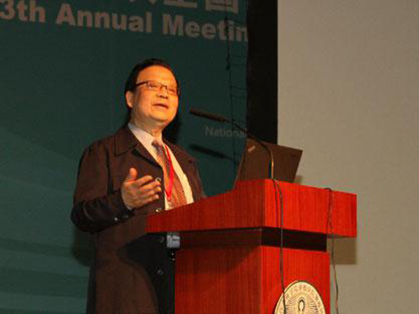
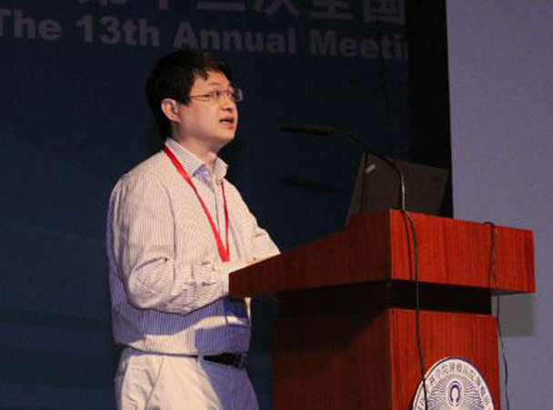

122
宫颈癌是我国妇女第二大常见恶性肿瘤，每年约有3万妇女死于宫颈癌。世界范围内每年约有50万宫颈癌新发病例，其中中国估计有13.5万新发病例，约占世界新发病例总数的1/4。
研究发现，几乎所有的宫颈癌的病理样本中均能找到人乳头瘤病毒（HPV），从而印证了HPV是宫颈癌的主要病因，也使宫颈癌成为目前人类所有癌症病变中唯一病因明确的癌症。
日前，第十三次全国子宫颈癌协作组工作会暨子宫颈癌防治研究进展学术研讨会在京召开，郎景和院士在大会中明确指出：目前全球女性的HPV感染率11%左右，HPV感染在30岁以下（18-28）性活跃的年轻妇女并非少见，但这种感染通常是“一过性”的或者“一过性HPV携带状态”，多数在8-12个月可以清除，只有持续性的感染才能导致子宫颈上皮内瘤变，尤其是感染16/18型HPV，宫颈癌的发生率增加250倍。上世纪60、70年代，小于30岁的子宫颈癌占到所有患者的不到5%，现在是30%，宫颈癌年轻化趋势非常明显。2006年全球已经进入宫颈癌疫苗的时代，但是到现在中国还没有上市。
厦门大学公共卫生学院副院长张军教授表示：接种宫颈癌疫苗后能诱发机体产生抗体,抗体可透过血管壁，在局部上皮组织中达到较高浓度,在HPV通过粘膜上皮的细微伤口接触基底细胞前，位于上皮组织中的抗体即能与病毒结合，阻止病毒感染细胞。2006年以来，全球至少有1.6亿支HPV疫苗被使用，大量的监测数据及对个别异常反应报告的详细分析均未发现疫苗接种导致的严重不良反应的确切证据，充分显示了疫苗的长期安全性。
世界卫生组织（WHO）专家认为，性生活开始前的女性接种宫颈癌疫苗获益最大，因此9-13岁女性为最优先接种对象，建议纳入国家免疫规划中。研究数据显示，14-25岁青年女性以及大于25岁成年女性接种疫苗也可以获益，男性接种可间接使女性获益。
中国医学科学院肿瘤研究所的研究认为，假设2006-2012年间，全国9-15岁女孩均接种HPV宫颈癌疫苗，预计产生的终身防病效果，可以使新发宫颈癌人数和宫颈癌死亡人数降低71.8%。中国每晚1年接种宫颈癌疫苗，会使843万女孩丧失最佳免疫接种时机，其中20.6万在25年内将发生高度癌前病变。
目前已有三家国内外企业（美国默克公司、英国葛兰素史克公司两家进口企业和中国厦门万泰沧海公司）的宫颈癌疫苗完成了三期临床试验的疫苗接种，正按照国家药监局的注册要求进行接种后的观察。专家们一致期待宫颈癌疫苗能早日在国内上市，尤其是研发上市价格适中的国产宫颈癌疫苗意义重大。
来源：搜狐健康 http://mt.sohu.com/20150504/n412353986.shtml